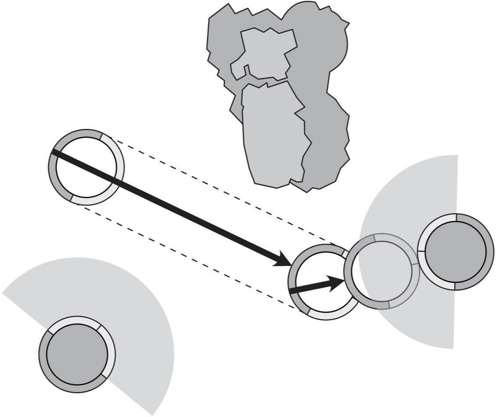

Bushido: Risen Sun
Living Rulebook
test version
2025-01-20

test version
2025-01-20

This living rulebook is generated from the JwarRef (jwarref.netlify.app/) data. It should be fully up-to-date.
If you spot any errors, please report them in the Discord/jwartools channel or via the GitHub repository (github.com/GCT-Studios/JwarRef).
Other recommended tools include:
For a game of Bushido, each player will need:
Activating Model: The model as chosen by the Active Player currently resolving its action.
Active Player: The player whose turn it is to activate a model.
Base-to-Base (BtB): A model is in BtB with another model if their bases are physically touching.
An Activating Model not in BtB already can only enter BtB with 1 Enemy model per activation.
Some ranges are specified as BtB rather than in inches.
Battlefield: A game of Bushido takes place on a 2’x2’ area we call the Battlefield.
Models on the Battlefield or designated as being Elsewhere are In Play.
Controller: The player with whom a model is currently Friendly.
Counters: Counters are named for the effect that requires them and may be used to count turns, activations, or some other timing effect before they expire.
Activation Counters are a particular type of counter. These show how many activations a model can make this turn.
See Condition.
Cover: When Terrain partially blocks LoS to a model, that model gains Cover.
A model benefits from Cover from an Enemy model if any straight line from the Enemy passes through an Obscuring or Blocking terrain element that is within 1” of the Target model.
Damage: A model is Damaged or takes Damage when it suffers wounds or its wound boxes are marked.
Model A deals or causes damage when a model has wound boxes marked due to an effect on model A or an action taken by model A.
Damage Roll: A roll using 2D6, applying any negative or positive Modifiers then cross-referencing on the Wound Table in the column equal to the Success Level of the tests, to see the number of wounds inflicted on a model.
Deploy: When a model is first put into play it is Deployed onto the Battlefield.
After Terrain is Set Up, any effects that add more terrain to the Battlefield may also say they are Deployed. This is not a Move or Place.
A model may not be Deployed into BtB with an Enemy model or in an Enemy Model’s ZoC.
Models are Deployed with no Activation Counters.
NOTE
Terrain instead follows the Terrain Rules and any restrictions for the effect putting terrain into play.
Dice Rolls: Bushido uses ordinary six-sided dice.
When a dice is rolled, the number given is referred to as the value on the dice.
We use dice in the following ways:
Some abilities call for a coin flip; this can be represented with a D2 if needed.
In some instances a random model or other element may need to be selected, any straightforward method should suffice such as assigning each a number then rolling a dice.
Effects: This is a catch-all term for various rules including Ki Feats, Theme bonuses, Unique Effects, Event Cards or others.
Usually, for timing we say “Effects that happen in this phase” or similar; this means any rule that says it happens in that phase.
Elsewhere: Elsewhere is a specific place for models in play but not on the Battlefield.
These may be Flanking troops, models flying high over the battle or fighting on another plane of existence.
Models in Elsewhere generate Ki Tokens as usual and are affected by traits and states (such as Fire and Regenerate) but do not generate Activation Markers and cannot spend Tokens.
Enemy/Friendly: Models can either be Friendly or Enemy, depending on which player’s Warband they are in.
Models in a player’s own Warband are considered Friendly.
Models in an Opponent’s Warband are considered Enemy.
Entering: During any move, the first time a model comes into contact with an area of the Battlefield, terrain element, or named effect it is considered to Enter that area, terrain, or effect.
If an effect is over multiple areas or terrain elements (e.g. Void Rifts) the model only Enters the effect the first time it contacts the effect.
If a model is Placed into an area of the Battlefield, terrain element, or named effect it is considered to Enter that area, terrain or effect.
Exhausted: A model with no Activation Counters is considered Exhausted.
Facing: A model’s Facing line is directly in the centre of the front of its base. It should be marked with a line or dot on the model’s base.
Ninety degrees either side of a model’s facing line shows its Front Arc and should be marked on the model’s base with lines or dots.
A model is Facing anything forward of its Front Arc.
A model is Directly Facing anything in front of its facing line.

Faction: Models have a Faction Icon to denote which of the many warring factions from the Jwar Isles they belong to.
If a rule references a Faction, it refers to the Faction Icon printed on the front of the model’s card.
Generate Ki: Generate refers to gaining Ki in the starting phase, step 2. Any other time a model gains Ki it is not Generated unless specifically stated.
Initiative: The model with the Initiative checks its Attack dice first in Melee Exchanges and declares the use of Ki Boosts and Ki Feats after their Opponent (See Melee Exchange).
The Activating Model has the Initiative unless a trait, State or game Effects changes this.
In Play: A model is in play when it is on the Battlefield or Elsewhere.
A model is not in play when not recruited into the Warband and/or has been Killed or removed from Play.
Ki Boost: A Ki Boost is a special type of Ki Feat that increases statistics.
Killed: When a model has 0 wounds remaining on its Wound Track it is Killed, remove the model from the table.
Line of Sight (LoS): A model can draw LoS to points in its Facing. LoS is achieved if you can draw a straight line from any part of the origin model’s Base to a point in that origin model’s Facing.
Terrain and models block LoS except for the following:
LoS may be checked for any model (Friendly or Enemy) at any time.
EXAMPLE
Model A has no LoS to Model B since Models E and D are blocking LoS.
Model C is Medium Sized, so has LoS to Model A, likewise Model A has LoS to Model C.
Markers: Markers are used to mark what States are currently affecting a model. See Model States.
Measuring Distances: The unit of measure in Bushido is inches.

Example
If the edge of a model’s base is exactly 6” away from its Opponent’s base, it is considered to be within 6”.
NOTE
In timed play, the player whose clock is running always has priority and should not be obstructed by their opponents’ measuring devices.
Modifiers: When a statistic is modified it can never go above double its base value.
If results are divided and leave fractions, always round down except in the case of distances, where fractions of inches are kept.
Numerical values of traits can be modified.
If an effect requires dice to be substituted, the value of the dice is often fixed to some value. It is helpful to physically remove the dice and place it, showing that value, with the dice that were rolled.
If a dice is substituted, it cannot be re-rolled.
If modifiers, rerolls, adding or removal of dice affect any roll then only after all of these have been resolved can a result be determined.
Movement: Movement is measured using a tape measure (or other measuring devices).
If a model must move Toward another game element (such as another model or Terrain piece), then it cannot increase its distance from that element for any part of its movement.
If it must move Directly Toward a game element, then it can only move in a straight line drawn from the centre of its base to the centre of the game element.
Similarly, a model which must move Away cannot decrease its distance from that element for any part of its movement.
If it must move Directly Away from a game element, then it can only move in a straight line drawn from the centre of its base away from the centre of the game element.
An Activating Model can only enter BtB with one Enemy model per activation.
Open & Hidden Information: In Bushido, all information is ‘open’ unless explicitly stated otherwise.
This means that both players are entitled to read any rules, stats, model cards, special cards or any other information pertinent to the game, unless the rules explicitly state the information is hidden.
Each player’s Hidden Information should be recorded on one sheet of paper and handed over after the game.
If you have a third party, they can be used to check hidden information during the game to make sure no mistakes happen.
Owner: A model’s owner is the player who initially recruited the model into their Warband or summoned the model, ignoring any control markers or game Effects.
Place: Sometimes Models are Placed on the table instead of moving around the table.
Replace: When a model is replaced, swap the model on the board with the new model. If the model was not in play, the new model is considered Deployed.
The player using the replacing effect chooses the new model’s Facing.
If the new model has a different sized base, then it must be placed so that the larger base entirely covers the area of the smaller base.
If the model being replaced was in BtB with an Enemy model, the new model must be placed in BtB with the Enemy model if possible.
When 2 models swap positions, replace each model with the other model.
Select: No [LoS](Line of Sight) is needed to select a model; selecting is not targeting.
A model may select itself.
Size: Unless a model’s Size is stated as a trait, it is determined by its base.
Tiny and Huge models are indicated by Traits. Models with these Traits have the given size regardless of base size.
Summon: When a model is Summoned to the game it is added to the Warband in addition to the models already recruited.
You do not need to pay the Rice Cost of a Summoned model.
Some models have Su as their Rice Cost, these can only enter play by being Summoned.
When a non-unique model is Summoned to the game it never has any Enhancement - Equipment cards attached to its card.
If a unique model that was recruited into the Warband is Summoned after being removed from the game, it retains any Enhancement - Equipment cards it was recruited with.
Supporting Dice: When making a Test, up to 2 Dice may be chosen as supporting dice, these each add +1 to the value of the highest [dice roll](Dice Rolls) to get the final result.
Surprised: A model is Surprised if an Activating Enemy model that did not begin its activation in BtB, performs an action that Targets it or brings it into BtB and that Enemy model started outside of LoS and remains outside of LoS during Movement.
Surprised models may not declare Ki Feats or Ki Boosts, are always the Attacker second in Melee Exchanges, may not benefit from traits or effects that affect Initiative and suffer a -1 Melee Pool modifier.
They may still declare Special Abilities (Attacks and Defences).
Models are only Surprised until the action in which they became Surprised is resolved.
Effects which are not Ki Feats may still be used.
Target: A model must be able to draw [LoS](Line of Sight) to another model to Target it.
A model may always Target itself.
Test: Whenever a model attempts an action which may succeed or fail, its controlling player [rolls dice](Dice Rolls) to complete a Test.
The value of the dice rolled will determine if the model succeeds or fails the test.
Timing: Any effect which does not specify when it can be used may be used any time.
The exception is during Melee Exchanges or Ranged Attacks, where the timing is restricted as detailed in the Melee Exchanges and Ranged Attacks section.
If both players wish to use such Effects the Active Player goes first.
If an effect does not have a stated expiration time, it ends in the End Phase.
Trap: When a model activates, only one Trap Effect may be used.
Tokens: Tokens are used to track a model’s resources, such as Ki Tokens.
Virtue Tokens: Many effects give out Virtue Tokens, most commonly the Virtue Trait.
This particular type of Token represents different benefits depending on the other models you recruit.
When a Virtue Token is spent by the profile which has it, it chooses one of the available abilities. Some models have abilities that can only be used by spending a Virtue Token.
When a model spends a Virtue Token you may choose one permitted ability on the card of any Friendly model In Play.
NOTE
The abilities usually say “This model…”. This refers to the model spending the token since that model gains the ability. You read it as if it were reading the spending model’s profile card.
NOTE
Some models have abilities that are restricted to a certain group or even specific models; see individual cards for details.
Warband: A player’s Warband consists of recruited, Summoned and Controlled models as well as Special cards.
Zone of Control (ZoC): In Bushido, every model has a ZoC extending 1” from the edge of its base to any point within its [LoS](Line of Sight).
Models ignore Friendly ZoC, but once a model enters an Enemy model’s ZoC, it may only move directly towards that model, or directly away, until it leaves the ZoC.
Models beginning their activation in one or more Enemy model’s ZoC must either:
Models can ignore the ZoC of Models that are in BtB with Enemy models for movement and declaring or performing actions (such as Ranged Attack Actions or Scenario Actions which otherwise cannot be performed in a ZoC).
If a model moves out of BtB, then it may ignore the ZoC until that move is completed.

Profile cards contain all the rules specific to all models represented by that card. You may also use the profile card to keep track of the wounds sustained by your model(s), Ki Tokens and game effects.
Name The name of the model(s). If this card represents a unique individual character rather than one or more generic profiles, this has a special border, and the Rice Cost is coloured Gold.
Elemental Icons Some models are aspected towards one or more of the six elements:
| Earth | Water | Fire | Metal | Air | Void |
|---|---|---|---|---|---|

|

|

|

|

|

|
Base Size & Max Symbol If a profile has multiple base size symbols any of the available options are permitted.
Type The type indicates all the keywords that refer to the model. A model can have multiple types, these are separated by commas, and a model is always all of its types.
The Name and Types of models can often be referred to by other rules.
Traits often have a [Type] that singles out what models the trait affects. This [Type] can also be a model’s name.
Plural words are considered the same type as the same singular word for cards with multiple wound tracks.
Statistics The number is the model’s base statistic value. Some effects modify a statistic, but it can never go above double its base value.
If a statistic is 0, it can be modified to a maximum of 1.
If a “-” icon represents a statistic, then it counts as 0 but cannot be modified by positive or negative modifiers.
Some models may have a Ki boost icon to the side of the Statistic value.
This is the Statistic’s Boost cost. This is the cost in Ki Tokens to increase the Statistic by 1.
Boosts remain only for the current Test or Movement. A player may increase a Statistic multiple times (to a maximum of double its base Statistic), as long as there are Ki Tokens available to do so.
Boosts are considered Ki Feats.
5a. Melee Pool Statistic This is the number of dice the model uses when resolving an Opposed Melee test.
5b. Ranged Pool Statistic This is the number of dice the model uses when resolving a Ranged Attack.
NOTE
Many models will have some Ranged pool statistic even if they do not have a ranged weapon. Perhaps they can be bought a ranged weapon or use the ability in some other way.
5c. Move Statistic The distance the model can move in inches when it makes a movement that specifies this distance. Also, the number of dice rolled for a Move Test.
5d. Ki Statistic/Maximum Ki Limit The Ki statistic is actually 2 statistics represented by 2 numbers written X/Y.
The X number is the model’s Ki statistic. This tells you the amount of Ki Tokens each model represented by this card generates during the Starting Phase and the number of dice it uses for Opposed and Challenge Ki tests.
The second Y number is the model’s Ki Limit, the maximum number of Ki Tokens each model represented by this card can have at any one time. If it would gain more than this, any excess is discarded.
Some cards have multiple Wound Tracks to use for multiple identical models. The number of Wound Tracks is the limit to how many of these models you may recruit in a Warband.
Some Profile Cards, such as Kami models, have a Max symbol on the back next to their Size. These Profile cards are usually ones that have no wound tracks.
Whenever a rule refers to the number of Wound Tracks use the Max number instead if the card has one. You can recruit up to this number of these models into a Warband.
Traits Reminder Text
Starter set cards have reminder text for all their traits. Remember this is just a reminder of the rule; the full version is in this rulebook, always look up the complete rules text if there is an issue mid game for clarification.
Ki Feats Ki Feats available to the model(s).
Melee and Ranged Weapon Grids All models in Bushido have a melee weapon, though for any they are fists and feet or claws and teeth. Some also have a ranged weapon.
The weapon grid also lists any weapon traits that are in effect when using that weapon, as well as any special attacks and defences that are available when using that weapon: a. Designates the weapon as either a Melee or Ranged Attack weapon. Ranged Weapons have Range Bands.
Faction Symbol Which Faction the model belongs to. Some models are from the Ronin pseudo-Faction.
Your Warband can only recruit models that belong to your chosen Faction, or Ronin models recruitable by your chosen faction as indicated on the Ronin model’s card.
Unique Effects Any additional rules that are not Traits or Ki Feats.
Rice Cost The cost to recruit this model into your Warband.
Models with Su are Summoned models that enter play during the game through a Ki Feat or Unique Effect and cannot be recruited when creating your Warband.
Models with Sp are models with a special rule which will be explained on its profile card and cannot be recruited when creating your Warband.
If a card’s Rice Cost is followed with ea, then more than one model represented by that card may be recruited into your Warband. Each model recruited pays the cost specified.
If a model’s Rice Cost is increased or decreased by a Theme list or other rule, the original printed Rice Cost is still used for all game effects relying on the Model’s Rice Cost.
Faction decks include special cards specific to each faction, with a Ronin set of special cards available to all.
Each card can be recruited X times per Warband based on its Max (X) trait.
If a card has no printed Max (X) trait, it is assumed to be Max (1).
There are three types of Special cards that players can recruit when creating their Warband - Enhancements, Events, and Terrain. Each type acts differently in how and what they affect during the game. These are explained in detail below, but all special cards are comprised of the following features:
Some cards say to Discard the card after a specific trigger happens. A Discarded Special card has no effect on the game from that point onward.
The player must decide which profile card an Enhancement card is Attached to during the creation of their Warband. During play, place an Attached Enhancement card under the chosen profile card. The model(s) will benefit from the effects detailed on the card for as long as it is Attached to the model(s)’ profile card.
Models with the Insignificant trait cannot have Enhancement cards Attached to their profile cards during Warband creation. Animal, Construct, Kami and Swarm models may only have Enhancement cards that specifically name them as Required.
Some models have multiple profile cards. If a card says X and Y are considered the same model when creating a Warband, then any Enhancement cards bought for either card are moved to the one starting in play before the game.
Some cards represent multiple models and have multiple wound tracks. Enhancement cards will specify if they can be bought for such models multiple times or can only be bought for a single model on the card. In the case of enhancements applied to a single model on a card representing multiple models, the enhanced model must be distinguishable from otherwise identical models without the enhancement.
Enhancement Card Traits:
Event cards are played once, at a time detailed on the card. Once the card is resolved, then it is discarded and removed from the game.
Unless stated otherwise Event Cards are used in the same way as Instant Ki Feats. They are not, however, considered to be Ki Feats.
Some event cards may result in another special card being put into play, often as a result of some action on the table. In these cases, the other special card will be printed on the reverse side of the Event card and can only be recruited in this way.
Event Card Traits:
Terrain cards allow a player to deploy a specified Terrain element on the table during the player’s normal Deployment of their Warband.
Terrain elements deployed due to Terrain cards must follow standard rules for Terrain element deployment unless stated on the card.
If restrictions mean that the terrain cannot be deployed, the opposing player must make as small an alteration as possible to allow the bought terrain to be placed.
Destructible: A model in BtB with this terrain and not in an Enemy ZoC can declare a Wait Action and spend 2 Ki to remove it from the table.
Requirement [Type]: This card is restricted in how it can be played or recruited and requires a [Type] model.
For Passage, Visibility and Size traits see Terrain.
Some factions have access to a Communal Card. These cost no Rice and can always be recruited. You may only recruit one Communal Card with the same name.
Example
A warband has recruited Bakemono Horde “Out of the Underworld” so it may not recruit the Bakemono Horde “The Shadow Council” communal card.
Some Communal Cards are used to pool together all the Ki generated by their community profiles. If this is the case, all community profiles will have a maximum Ki listed as *.
Such models never have Ki, effects that would gain them Ki, including Channel, Leech, Ki Generation, the Focus Action or any Ki Feats or other effects instead add Ki to the communal card.
Communal Profiles with a * for maximum Ki are not subject to abilities that remove Ki from them. For example, they cannot be Leeched from and the Psychic Drain Ki Feat has no effect.
Some Communal Cards may grant other abilities, similar to Unique Effects on a profile card. Some Communal Cards add new feats to the community profiles. Always read these as if they were printed on the profile card.
A player can only use one Theme per Warband. Themed lists allow you to trade restrictions in Warband composition for other bonuses during gameplay. Unless otherwise stated, Theme benefits only affect Friendly models.
Example
Aiko is recruited into the Righteous Warriors Theme, Silverback can now be recruited even though animals, gorillas and Silverback are not listed in the Permitted models.
Theme Card Traits:
When two rules come into direct conflict, use the following order of precedence to determine how to proceed:
Example
Kenko uses Slam Attack on Manu.
Manu has the Immovable Trait.
Slam Attack makes no reference to Immovable, & vice versa - so test 1 does not resolve this.
As per test 2, since Immovable is stopping an effect from happening, it takes priority over the Slam rules so Manu is not moved or made Prone.
To recruit a Warband, players must choose a Rice Limit and a Faction to play.
The Rice Limit determines the size of the game and can be arbitrarily chosen .While you can play games with any amount of Rice you will find the following standard formats:
A player’s Warband in Bushido is made up of several models, and any Special cards from the same Faction and may include Ronin that may be recruited by that Faction.
Warning
A Warband may not be of the Ronin Faction.
The Rice Cost of your Warband must come to the total agreed upon with your Opponent.
A Player can only recruit one of each card; this does not prohibit the Opponent from recruiting the card for their Warband.
Sometimes two or more models are represented by the same profile card.
A player can choose to recruit as many models as there are Wound tracks on the profile card.
Ronin represent wanderers, mercenaries, diplomats, outcasts and other individuals who may fight for more than one Faction.
From three Imperial Princesses expecting hospitality from the Tengu, to Sojobo leaving his people without a King to seek the enlightenment of the Temple, Ronin each have different motivations for working with many Factions, but all follow these rules:
Example
A Prefecture list using the Blood of the Dragon theme can include Samurai but cannot include Golden Sentinel models as the theme does not include Ronin Samurai.
Example
It is possible to create a Warband entirely made of Ronin.
First choose a faction (Prefecture, Ito, Silvermoon etc…) and choose Ronin available to that faction.
It is not a “Ronin Faction” list as this is not permitted.
Before starting the first Turn, players need to set up the game using the following steps:
Games of Bushido are broken down into a number of Turns.
How many Turns the game lasts is dictated by the Scenario being played.
Each game Turn is divided into three Phases:
Models can move around the board in a number of ways depending on the action chosen when the model activates or the effects applied to those models. Some models are naturally faster than others, represented by their Move statistic and Move Boost; many models also have abilities or Ki Feats which allow them to move.
Any model may use different types of movement by choosing the requisite action; some effects also allow movement; the effect will tell you how the model moves. Effects that are triggered by movement can trigger from any of these.
If a model would be moved past the edge of the game area, then it stops when its base touches the edge of the board. A model cannot be Placed with any part of its base off the board edge.
The model moves up to the given distance, along any path, subject to the restrictions for the action or ability that permits a move and may change its Facing at the end of the movement.
Changing Facing is considered a movement, even if the model remains in the same place.
During this movement, the model’s base may not pass through another model’s base or impassable terrain.
If an effect allows a player to move an opponent’s model, its facing may not be changed unless the effect specifically states otherwise.

The model may make a move up to the distance stated (If no distance is given, the walk is up to the model’s Move Statistic in inches) in any direction.
A model performing a Walk may not move into an Enemy ZoC or move into or out of BtB with an Enemy model.
If an effect allows a player to walk an opponent’s model, that player chooses its facing at the end of the walk.

The model may choose a point within its LoS then rotate to face that point. The model may then make a movement in a straight line, directly towards that point.
A model may not Run into an Enemy model’s ZoC, into BtB with an Enemy model, or change its Facing after the movement.

The model Targets an Enemy model, moving up to double its Move Statistic towards that model in a straight line which would bring its base into contact with the Target’s base or ZoC.
During this movement, it may not contact an enemy ZoC other than the Target’s.
If this movement would cause it to contact another Enemy model’s ZoC, its movement stops immediately before that ZoC.
Once in contact with the Targeted model’s ZoC or if the targeted model is in the acting model’s ZoC, the charging model may ignore the ZoC of other Enemy models.
Once the charging model contacts the Target model’s ZoC, it must move directly towards the target until it is in BtB.
This movement need not be along the straight path of the charge movement.

Placing a model is not considered Movement.
Just pick up the model and place it in its new permitted location.
It does not have a move path, and it ignores ZoC, models and terrain between it, and its final location.
If a model is Placed, it cannot be placed into the area of an Impassable Terrain Element, another model or into BtB with an Enemy model.
Each specific Place effect may have further restrictions.
The player Placing the model decides the model’s Facing.

Models in Bushido perform actions to affect the game. The actions a model can take depend on the number of Activation counters on that model and whether it’s in BtB with an Enemy model.
If a model cannot legally declare any actions (due to Model States, Traits or other game effects) when chosen to activate the model immediately becomes exhausted.
Models in BtB with an Enemy model may not declare Actions or Ki Feats with the  icon.
icon.
If a model performs an action with the  icon then it may not perform a walk alongside the action. The Active Player chooses which model they are activating (the Activating Model) and what Simple or Complex action the model will take.
icon then it may not perform a walk alongside the action. The Active Player chooses which model they are activating (the Activating Model) and what Simple or Complex action the model will take.
Remember Exhausted models cannot be chosen to activate, but can still participate in Melee Exchanges if Targeted by a Charge or Selected for a Melee action.
During the Starting Phase, each model gains 2 Activation Counters. Each time a player becomes the active player, they choose one model with activation counters to perform an action.
Once a simple action is completed, remove 1 Activation Counter. Once a complex action is completed remove 2 Activation Counters.
If a model participates in a Melee Exchange has Activation Counters, it loses 1 Activation Counter for participating in the Melee Exchange in addition to the Activating model who performs the Melee action.
If an effect says a model makes an action, such as a Walk Action or other standard action, even as part of a larger effect or another model’s activation, it loses an Activation Counter. If the effect allows the model to Walk, Melee or other effect but does not make an action, then it does not lose an Activation Counter.
A model with no Activation Counters is Exhausted and cannot be chosen to activate. If a model has only one Activation counter, it cannot declare a Complex action.
Example
Hanso uses his Command trait on 2 Yarimen. Both Yarimen declare a melee action. As Command specifies a Simple Action, the Yarimen lose an Activation Counter each.
Example
Hanso uses his “Move it!” Ki Feat on two Yarimen. Both Yarimen make a Walk up to their Move Stat in inches, but this is not a Walk Action, so they do not lose an Activation Counter.
Standard actions in the game fall into two categories - Simple or Complex. Simple Actions remove one Activation Counter, while Complex Actions remove two Activation Counters. Traits and Unique effects may grant other actions, but they are not considered Standard actions.
Select an enemy model. The Activating model must attempt to enter BtB with the Enemy model by moving up to its Move Statistic in inches.
During this movement, it may only enter into the ZoC of the model with whom it is attempting to enter BtB.
However, while within that model’s ZoC or if the selected model is in the acting model’s ZoC it may ignore other Enemy models’ ZoC.
If at the end of its movement, it is in BtB with the selected Enemy model, it must resolve a Melee Exchange.
Models that start their activation in BtB with a single Enemy model may only move around that Enemy model’s base, ignoring the ZoC of enemy models.
They may enter BtB with a different chosen model as part of this move.
After moving a Melee Exchange is resolved with the chosen model in BtB.
If a model starting its activation in BtB with an Enemy model attempts to enter BtB with another Enemy model and fails to do so, it must resolve a Melee Exchange against the model it started in BtB with.
NOTE
You only remove one activation counter from a model for declaring a melee action and being involved in the resulting melee exchange.
Choose one enemy model in BtB with the activating model.
The activating model resolves a Melee Exchange against that model. It must allocate at least as many dice to Defence as to Attack, and if unable to do this (E.g. the model is Aggressive) then it may not attempt a Disengage Action.
If the Activating model successfully defends or ends the exchange, not in BtB with the chosen model, after the Melee is resolved, it may make a Walk up to its Move Statistic in inches, ignoring all models in BtB.
The Activating model may attempt a Simple Ki feat listed on its profile card.
Some Ki Feats have the or Icons; these icons apply to this action if the chosen Ki Feat has them.
The Activating model makes a Ranged Attack, targeting an Enemy model and may make a Walk up to its move in inches either before or after the Ranged Attack is resolved.
You must declare whether you will walk as part of declaring the action.
The model cannot make a Ranged Attack while in BtB or within the ZoC of an Enemy model. A model making a Ranged Attack may be referred to as “The Attacker”.
The model may make a Run up to 1.5 x its Move Statistic in inches.
The model may not be in BtB with an Enemy model, or in an Enemy’s ZoC, and must be in BtB with a Scenario Objective.
Turn the Activating model to face the objective directly.
See the specific Scenario to resolve any other effects of the Action.
This action may only be declared if the Activating model is Prone.
The model removes its Prone State marker and may change its Facing.
After removing the marker, if the model is in BtB with an Enemy model, then resolve a Melee Exchange with a -1 Melee Pool penalty.
The Activating model takes no other action. Instead, it may choose one of the listed effects triggered by taking the Wait Action:
The Activating model may make a Walk up to its Movement Statistic in inches.
The Activating model makes a Charge move.
If a model does not have enough movement to achieve BtB with its Target, then it cannot declare a charge action on that target.
After moving into BtB, a Melee Exchange is resolved. For this Melee Exchange, the charging model gains +2 to its first Damage Roll.
The Activating model may attempt a Complex Ki feat listed on its profile card.
Some Ki Feats have the or Icons; these icons apply to this action if the chosen Ki Feat has them.
The Activating model gains the number of Ki Tokens equal to its Ki Statistic.
The model may not be in BtB with an Enemy model or in an Enemy’s ZoC and must be in BtB with a Scenario Objective. Turn the Activating model to face the objective.
See the specific Scenario to resolve any other effects of the Action.
To see whether a model’s action is successful, and how successful, often requires a test.
There are two types of tests in Bushido, Opposed and Challenge. Both tests involve rolling D6s. Opposed tests pit both players against each other, while Challenge tests require one player to roll dice against a Challenge Number.
If the result on a dice is a natural 1 (after rerolls) then it is ignored when calculating the result of the dice roll; it is removed from the pool entirely and does not count for tiebreakers when counting the number of dice rolled.
If all dice rolled result in 1s, then the final result is considered 0.
If, naturally or because of negative modifiers, a model’s Statistic value used for an Opposed or Challenge test is 0 or less, the player still rolls a single dice.
In Opposed tests, both players gain a dice in their pool until both players have at least one dice.
Example
Wu-Zang has a base melee pool of 1 in a melee exchange, Wu-Zang is Exhausted and has a Stunned Marker.
His current Melee Pool is -1.
His opponent, Jin, has 3 Melee Pool.
Both players gain two dice to bring Wu-Zang up to one dice and his opponent to 5 dice.
NOTE
Remember that two numbers represent a model’s Ki, the Ki Statistic and the Maximum Ki Limit.
When conducting tests relying on the Ki Statistic, the Maximum Ki Limit is not relevant.
Example
Hanzo has a Ki Statistic of 2 and a Maximum Ki Limit of 6, represented as 2/6 on his profile card.
When Hanzo takes a test relying on the Ki Statistic, his dice pool is two before any modifiers.
When declaring the use of Ki Feats (Including Ki Boosts) during any test, the Opponent declares first and the Activating model or the Model with the Initiative if in a Melee Exchange, declares second.
If dice must be re-rolled, then re-rolls should be conducted in the following order with Model A being the model with the Initiative or the Activating Model, and Model B being their Opponent: 1. - Model B picks any of Model A’s dice; these dice are then re-rolled. - Model B then picks any of their own dice; these dice are then re-rolled. 2. - Model A picks any of Model B’s dice; these dice are then re-rolled. - Model A then picks any of their own dice; these dice are then re-rolled.
These type of tests require two models to roll a number of dice equal to the Statistic value for the test. For an Opposed Melee Test, for example, you would roll a number of dice equal to the models’ Melee Pool Statistics.
Opposed Tests are resolved in the following order:
Tactical Tests occur at the beginning of every turn and determine who will be the Active Player first in that Turn.
Both players nominate a model to perform an Opposed Test using a single D6 (applying modifiers from traits such as Tactician or Scout).
The player who succeeds decides which player will be the Active Player first in the Turn.
This player also declares second when declaring the use of effects during the Starting and End phase until the next Tactical Test.
NOTE
In the case of a tie after checking the number of Dice, there is no Active Player during this roll, so the test must be taken again.
These type of tests require one model to roll a number of dice equal to the Statistic value for the test. These will be called out with a Challenge Number in brackets, for example, Ki Challenge Test (5) or Move Challenge Test (6).
The Challenge Number is the number that must be equalled or exceeded by the final result of the dice rolled. If no Statistic is specified, then the Challenge test is made using a single D6.
The Challenge Number can also be modified; it is possible for the Challenge number to be zero or negative.
A Size Challenge Test is a Challenge Test using a model’s Size in place of a Statistic.
A model taking a Size Challenge Test rolls a number of dice based on its size as shown in the table below.
Modifiers are then applied to the result of the roll, if applicable.
| Size | Number of Dice |
|---|---|
| Tiny | 1 |
| Small | 2 |
| Medium | 3 |
| Large | 4 |
| Huge | 5 |
Fear tests are Challenge tests using the model’s Ki Statistic. Any effects that affect Ki Challenge Tests also affect Fear Tests.
Models with the Fear trait, automatically pass Fear tests with a Challenge Number equal to or lower than their Fear trait.
They still take a Fear test if the Challenge Number is higher than their Fear trait.
Resolve a Fear Test when:
A model must have a ranged weapon to make a Ranged Attack.
A Ranged Attack is a type of Challenge Test, and the usual rules apply.
During a Ranged Attack the use of Instant and Active Ki Feats, as well as Effects that can be used as Instants, is restricted.
A model making a Ranged Attack may be referred to as “The Attacker”.
To make a Ranged Attack take a number of dice equal to the Attacker’s Ranged Pool Statistic, modified by any Instant Ki Feats, Ki Boosts, and Special Attacks.
Determine the Challenge number based on Range and other relevant modifiers.
Make a Challenge test as normal, followed by a Damage Roll based on the Success Level of the test.
If a Ranged Attack Targets a model in BtB with a Friendly model you will need to determine if you hit your Target or the Friendly model.
| Range Band | Challenge Number |
|---|---|
| Short | 4 |
| Medium | 5 |
| Long | 6 |
| Effect | Modifier |
|---|---|
| Target is Tiny | +1 |
| Target is Medium | -1 |
| Target is Large | -2 |
| Target is Huge | -3 |
| Target is Prone | -1 |
| Target is Surprised | -1 |
| Target is in Cover | +2 |
| Target Ran this turn | +1 |
| Activating model Moved, or will Move, as part of this action | +1 |
| Activating model already made a Ranged Attack this turn | +1 |
Traits and Effects may also modify the roll.
If a model Targets an Enemy model in BtB with a Friendly model then at step 4b, make a Ranged Challenge test (6), with the following modifiers.
| Target Size | Modifier |
|---|---|
| Target is Tiny | +1 |
| Target is Medium | -1 |
| Target is Large | -2 |
| Target is Huge | Automatic Success |
If the test is successful proceed as normal.
If the test is a failure the Target of the Attack is changed to the nearest Friendly model in BtB with the original Target.
The Ranged Attack continues with the new Target.
A Melee Attack is a type of Opposed test, and all the usual rules apply, during a Melee Attack the use of Instant and Active Ki Feats (and effects that can be used as Instants) is restricted. For a Melee Exchange, however, two tests are rolled simultaneously, with each model rolling Attack and Defence dice at the same time and applying traits to see which model comes out of the exchange victorious.
A Melee Exchange represents the awesome conflicts between the characters of Bushido using Katanas, Martial Arts, claws and teeth, Magical abilities and other stranger fighting techniques.
Example
Hiro is involved in a Melee Exchange. He has Melee Pool of 4 and spends 3 Ki to add another dice. He now has 5 Dice in his Melee Pool and must split them into Attack and Defence. He can choose to put:
or any other combination totalling 5 dice.
Melee exchanges usually occur as part of a Melee Action which allows you to move into BtB contact; often a melee action will be declared when already in BtB contact.
Once in BtB turn both models to face directly toward each other.
Next, players may declare any Instant Ki feats that will affect the melee, including Ki boosting the melee pool. The defender declares first.
Next players allocate dice pools. Secretly take your dice (You should have two colours of Dice, one for attack and one for Defence) and assign them, so you have a total equal to your melee pool.
You also need to remove dice from the Melee Pool to pay for any Special Attack or Defence.
Once both players have secretly allocated dice, reveal any special Attack or Defence and roll all the dice together.
In Tests, dice with a value of 1 are removed from tests. Put them to one side they are not counted for the rest of the melee exchange.
The Active player’s model attacks first. Take the value of the highest attack dice rolled, and also up to two other attack dice to become a supporting dice which each add +1 to the highest value, to find the result of the attack.
The defender does the same with their defence dice, taking the highest and adding +1 for each supporting dice.
If the Attacker succeeds, the difference between the final results is the Success Level of the attack. Any Special Attack or Defence is applied depending on the outcome.
This is used, along with a 2D6 Damage Roll on the damage table to find the total damage of the attack.
Assuming the defender is still around to make an attack, the defending player can now total his Attack Dice in the same way and check against the Attackers Defence to see if he also caused damage or uses a Special Attack or Defence.
Once the Melee Exchange is over, remove an Activation Counter from both models.
Example
Masaema Aya is in BtB with Chiyo.
NOTE
This timing chart covers every eventuality of combinations of Abilities, Ki Feats, Special Attacks and Defences and all manner of other ‘in game’ occurrences.
Use the following steps to resolve a Melee Exchange:
Example
A model with a Melee pool of 3 may roll either 3 Attack dice, 2 Attack dice and 1 Defence dice, 1 Attack dice and 2 Defence dice or 3 Defence dice.
| Effect | Dice Pool Modifier |
|---|---|
| Model is Exhausted | -1 |
| Melee Assist | -1 per model Assisting |
| Model is Prone, Blind, Stunned, Frightened, and/or Held | -1 per State |
| Model Ran this turn | -1 |
| Model is Surprised | -1 |
| Model declared a Stand Up action | -1 |
Models in Melee Exchanges suffer a -1 modifier for each Enemy model in BtB with which they are not currently resolving a Melee Exchange, and which is not also in BtB with a Friendly model.
The enemy model is said to be Assisting the Melee.
The Success Level indicates which column of the Wound Table the player should consult.
The player then makes a Damage Roll using 2D6, adding together results along with any positive or negative modifiers, the result of which determines which row to use to find the number of wounds inflicted by the attack.
1’s are not failures when making a Damage Roll.
If the final result would be less than 2, treat it as 2.
If the final result would be higher than 12, treat it as 12.
| 2D6 | 0 | 1 | 2 | 3 | 4 | 5 | 6 | 7 | 8 | 9 | 10 |
|---|---|---|---|---|---|---|---|---|---|---|---|
| 2 | 0 | 0 | 0 | 0 | 1 | 2 | 3 | 4 | 5 | 6 | 7 |
| 3 | 0 | 0 | 0 | 1 | 2 | 3 | 4 | 5 | 6 | 7 | 8 |
| 4 | 0 | 0 | 1 | 2 | 3 | 4 | 5 | 6 | 7 | 8 | 9 |
| 5 | 0 | 0 | 1 | 2 | 3 | 4 | 5 | 6 | 7 | 8 | 9 |
| 6 | 0 | 1 | 2 | 3 | 4 | 5 | 6 | 7 | 8 | 9 | 10 |
| 7 | 0 | 1 | 2 | 3 | 4 | 5 | 6 | 7 | 8 | 9 | 10 |
| 8 | 0 | 1 | 2 | 3 | 4 | 5 | 6 | 7 | 8 | 9 | 10 |
| 9 | 1 | 2 | 3 | 4 | 5 | 6 | 7 | 8 | 9 | 10 | 11 |
| 10 | 1 | 2 | 3 | 4 | 5 | 6 | 7 | 8 | 9 | 10 | 11 |
| 11 | 2 | 3 | 4 | 5 | 6 | 7 | 8 | 9 | 10 | 11 | 12 |
| 12 | 3 | 4 | 5 | 6 | 7 | 8 | 9 | 10 | 11 | 12 | 13 |
Example
Masaema Aya manages to hit Ito Itsunagi for a Success Level 3, Rolling 2D6 for damage she gets a 3 and 5, adding her Strength of +1 we see a total of 9.
Cross-referencing the results on the wound table, we see that Itsunagi Ito suffers 4 wounds.
Melee exchanges in Bushido involve samurai sword masters and monks with mystical martial arts; they are not merely about hitting the opponent. A wide variety of different abilities can be used in a melee exchange.
If a model is able to attempt one of these Special Attacks or Defences, it will appear on the model’s Profile Card in the weapon grid.
A model can only use a special attack or defence if it is using the weapon that has it on its grid. These special abilities allow a model to trigger a special effect if it uses the ability and successfully Attacks or Defends.
All Special Attacks and Defences have a bracketed cost after the name text, e.g. Sidestep Defence (1). This is the number of dice to remove from the model’s Melee or Ranged Pool (as appropriate) if it chooses to use a Special Attack or Defence. A model’s dice pool cannot be reduced to 0 through the use of a Special Attack or Defence, and if this would happen the player cannot declare that Special Attack or Defence.
A model may only perform one Special Attack or Defence per Melee Exchange or Ranged Attack.
Some special Abilities can cause models to move when successful. All movement from Special Abilities ignore enemy model’s ZoC and being in BtB.
If through a Special Attack or Defence a model would be moved past the edge of the game area then it stops when its base touches the edge of the board.
If through a movement from a Slam Attack, Throw Attack or Throw Defence a model is moved into BtB with another model then, dependant on the two models’ Sizes, one of the following occurs:
Ranged attacks will never have Special Defences because there are no defence dice for a ranged attack. However, ranged weapons may have Special Attacks on their weapon grid.
Combo Attack: If the Attack is successful then after resolving a Damage Roll, deduct 2 from the Success Level of the Attack.
If the new Success Level is 0 or greater make another Damage Roll against the Defender.
Repeat this process until the Success Level is less than 0.
If the Success Level of the original attack was 0 or 1, after resolving a Damage Roll, make one additional Damage Roll against the Defender at Success Level 0.
NOTE
If a model has abilities that trigger when damage is caused each damage roll will trigger those abilities separately.
Critical Attack: If this model’s Attack is successful, and the individual dice results of the Damage Roll are the same number, remove the Defender from play.
Drag Attack: If the Attack is successful, move the Attacker 1” away from the Defender, then move the Defender 1” directly toward the Attacker.
The Defender does not suffer a Damage Roll from this Attack.
Forceback Attack: If the Attack is successful, move the Defender 1” directly away from the Attacker, then move the Attacker 1” directly towards the Defender.
The Defender suffers half the wounds from the Damage Roll caused by this Attack.
EXAMPLE
 Akio is the attacking model.
Akio is the attacking model.
The defender is moved 1” directly away from the attacker.
The attacker is then moved directly forward into BtB with the defender.
After the Damage roll, the Damage is halved (rounding down).
Grapple Attack: If the attack is successful, the Defender becomes Held. Place a Held Marker on the Defender.
The Defender does not suffer a Damage roll from this Attack but may not attack during this Melee Exchange.
Powerful Attack: If the Attack is successful, then the Attacker gains +3 to the Damage Roll caused by this Attack.
Push Attack: If the Attack is successful, move the Defender directly away from this model until it leaves this model’s ZoC.
The Defender does not suffer a Damage Roll from this Attack.
EXAMPLE
 Akio is the attacking model.
Akio is the attacking model.
The defender is moved directly away from the attacker until they leave the attacker’s Zone of Control.
No Damage roll is made.
Sidestep Attack: If the Attack is successful, the Attacker leaves BtB and then move away from the Defender until the Attacker leaves The Defender’s ZoC, at which point its movement ends.
The Attacker makes no damage roll.
EXAMPLE
 Akio is the attacking model.
Akio is the attacking model.
The attacker may move away from the defender any distance until it leaves the defender’s Zone of Control.
No damage roll is made.
Slam Attack: If the Attack is successful, the Defender is moved 3” directly away from the Attacker and becomes Prone.
The Defender suffers half the wounds from the Damage Roll caused by this Attack.
EXAMPLE
 Akio is the attacking model.
Akio is the attacking model.
The Defender is moved 3” directly away from the Attacker and gains a Prone marker.
After the damage roll, the Damage is halved (rounding down).
Stun Attack: If the attack is Successful, the Defender gains a Stunned Marker after the Damage Roll.
Sweep Attack: If the Attack is successful, then the Defender becomes Prone.
The Defender suffers half the wounds from the Damage Roll caused by this Attack.
Throw Attack: If the Attack is successful, the Defender is moved 2” in a straight line and becomes Prone.
The Defender suffers half the wounds from the Damage Roll caused by this Attack.
EXAMPLE
 Akio is the Attacking model.
Akio is the Attacking model.
The Defender is moved 2” away from the Attacker to a point in LoS of the Attacker.
The Attacker may choose the movement path.
After the Damage Roll, the damage is halved (rounding down).
Counterstrike Defence: If this Defence is successful, and the Attacker allocated any dice to Attack, then deduct 2 from the Success Level of the Defence.
If the Success Level is 0 or greater, then make a Damage Roll against the Attacker using the modified Success Level of the Defence.
Drag Defence: If the Defence is successful, move the Defender 1” away from the Attacker, then move the Attacker directly into BtB with the Defender.
Forceback Defence: If the Defence is successful, move the Attacker 1” directly away from the Defender, then move the Defender directly into BtB with the Attacker.
Grapple Defence: If the Defence is successful, the Attacker becomes Held. Place a Held marker on the Attacker.
Push Defence: If the Defence is successful, move the Attacker directly away from the Defender until it leaves the defender’s ZoC.
Sidestep Defence: If the Defence is successful, the Defender leaves BtB and then move away from the Attacker until the Defender leaves The Attacker’s ZoC, at which point its movement ends.
Sweep Defence: If the Defence is successful, then the Attacker becomes Prone.
Throw Defence: If the Defence is successful, the Attacker is moved 2” away from the Defender in a straight line and becomes Prone.
Some techniques are only known to a few Masters of the sword or fist. Exceptional attacks and defences are detailed on individual profile cards; a few examples are detailed below.
Eagle’s Flight Defence: If the Defence is successful this model may Move 3” after the Melee Exchange is resolved.
Ivory Prison Attack: If this Attack is successful then remove the non- Insignificant, non-Soulless Target from play and deploy a Prone, non-unique Kairai under your control by replacing the target.
Gokusatsu Attack: If this attack is Successful, remove the defender and attacker from play.
If the enemy model has this Exceptional Attack, then this attack has no effect on either combatant.
A model may enter into a number of different States during a game.
A model may be in more than one State at a time.
Markers should be placed next to a model, or its profile card, to indicate that model’s State to the Opponent.
Berserk: While a model has a Berserk Marker, it gains the Aggressive trait.
When a model gains a Berserk Marker, it gains an Impetuous State State Marker.
When a Berserk model activates check the following steps in order until one applies:
During the End Phase remove all Berserk Markers in play.
Bleeding: If a model has Bleed markers it is considered to be Bleeding.
During the End Phase remove the highest value Bleed marker.
The model suffers a number of wounds equal to the removed Bleed marker’s value.
After this, if the model still has three or more Bleed markers, repeat the process, continuing to do so until the model has only 2 Bleed markers.
If a Bleeding model Heals any of its marked wounds from its wound track by any means, remove all Bleed markers from it.
Blind: If a model has a Blind Marker it cannot draw LoS outside of BtB and suffers a -1 Melee Pool modifier during Melee Exchange.
Blind models may not declare aRun Action or a Charge Action.
During the End Phase remove all Blind markers from each model with any Blind Markers.
Models with Sixth Sense automatically have Immune [Blind].
Controlled: A Controlled model switches Warband for a number of actions dependent on the number of Control Markers it has.
Whilst Controlled, the model generates Ki Tokens normally, but cannot spend or remove any Tokens it possesses, Ki or otherwise.
The controlling player may declare any action the model would normally be able to perform without spending Tokens.
For each Activation Counter removed from the model - or if a model participate in a Melee Exchange without removing an Activation Counter - also remove a Control Marker.
If a model has only one Control Marker, it cannot declare complex actions.
As soon as all the Control Markers are removed, the model returns to the original player’s Warband.
While Controlled, if an effect applies further Control Markers, instead remove one Marker for each Control Marker the effect would add.
Death Sentence: While a model with any Death Sentence markers is the target of a Ranged Attack or is involved in a Melee Exchange, the Enemy Model gains +1 Melee Pool or +1 Ranged Pool as well as +1 to any Damage Rolls.
The benefit for the Enemy Model is the same whether the target has one or multiple Death Sentence markers.
During the Starting Phase, a model with any Death Sentence markers may spend 3 Ki tokens to remove one Death Sentence Marker from itself.
Diseased: If a model has any Diseased markers then, during the Starting Phase, remove a Diseased Marker and an Activation Counter.
Disguised: While a model has a Disguised (X) marker, Enemy models with a Ki Statistic of 1 or less cannot Target or voluntarily move into BtB with the Disguised model.
If the enemy model has a Ki Statistic of 2 or greater, when making a Ranged Attack Action or Ki Feat against a Disguised model, once the attack or Feat has been determined to be in range, the Enemy model must make a Challenge (X) Ki test where X is the highest value of Disguised Marker on the Target model.
When attempting to move into BtB, determine if the model has enough movement to reach BtB and, if so, make a Challenge (X) Ki test.
If the Enemy model is successful remove the Disguised marker and resolve the action as normal. If unsuccessful its activation ends before any movement, and it removes an activation counter as if it had completed the attempted action.
If a Disguised model declares a Melee Action, Ranged Attack Action, Charge Action, or Simple Scenario Action/Complex Scenario Action, uses the Bodyguard trait, or participates in a Melee Exchange, remove its Disguise marker.
While a model is Disguised Enemy models may ignore its ZoC.
Frightened: This model gains the Defensive trait and suffers -1 Melee Pool and -1 Range Pool modifiers.
It may not declare Actions that would move it into BtB with Enemy models with the Fear trait.
During the Main Phase, Frightened models automatically fail Fear Challenge Tests.
During the End Phase, the model must take another Fear test with the same Challenge Number as it failed when entering the Frightened State.
If successful - or if no Fear Test was failed - remove all Frightened markers.
Held: As long as a model is Held it gains the Defensive trait and cannot declare any actions except the Disengage Action, a Ki Feat usable in BtB, or the Stand Up Action.
A Held model cannot move or be moved - except to change facing - and suffers a -1 Melee Pool modifier.
Remove the model’s Held marker when:
A Model with the Intangible or Agile trait has Immune [Held].
Immobilised: When an Immobilised model declares a Melee, Run, Charge, Scenario, Stand Up, Heal, or any action including movement (including changing facing before the action), the model must make a Size (6) Challenge test.
If unsuccessful the model’s action is considered resolved.
If successful the model removes all Immobilised markers and resolves its action as normal.
An Immobilised model cannot declare the use of Special Attacks or Defences.
A model can declare a Wait Action to remove all Immobilised markers.
Enemy models in BtB with an Immobilised model can declare actions as if they were not in BtB.
If any other effect moves an Immobilised model, then remove all Immobilised markers from it.
Intangible models have Immune [Immobilised].
Impetuous: As long as any model in a Warband has an Impetuous marker and any Activation Counters, no model without an Impetuous marker may activate.
Remove one Impetuous marker when the model perform an action consuming any number of Activation counters.
On Fire: If a model has On Fire markers it is considered to be On Fire.
During the End Phase remove the highest value On Fire marker.
The model suffers a number of wounds equal to the removed On Fire marker’s value.
These wounds ignore the Tough trait.
After this, if the model still has three or more On Fire markers, repeat the process, continuing to do so until the model has only 2 On Fire markers.
A model with On Fire markers, or a Friendly model in BtB, may take a Wait Action to remove up to two On Fire markers.
Poisoned: If a model has Poisoned markers, it is considered to be Poisoned.
During the End Phase remove the highest value Poisoned marker.
The model suffers a number of wounds equal to the removed Poisoned marker’s value.
After this, if the model still has three or more Poisoned markers, repeat the process, continuing to do so until the model has only 2 Poisoned markers.
Prone: If a model is Prone it suffers a -1 Melee Pool modifier and does not block LoS.
Enemy models may ignore it’s ZoC and may choose not to be considered in BtB with them when declaring or performing their actions, meaning the action choice is not restricted by being in BtB with the Prone model.
Prone models are always the Attacker second in Melee Exchanges, and may not use Special Abilities or benefit from traits or effects that affect Initiative.
The only action a Prone model may declare is a Stand Up Action.
If a Prone model initiates a Melee Exchange through taking a Stand Up action, it suffers a -1 Melee Pool modifier for that Melee Exchange, but Initiative is not affected.
A Prone model cannot gain Prone Markers.
Reloading: While a model has any Reloading Markers it may not use any weapon with the Reload trait to make Ranged Attacks.
A model may perform a Wait Action to remove one Reloading Marker.
Spirit Block: If a model has a Spirit Block marker it does not generate Ki tokens during the Ki Generation step.
At the end of the Ki Generation Step remove one Spirit Block marker from each model with a Spirit Block marker.
Stunned: If a model has any Stunned Markers, it suffers a -1 Melee Pool and a -1 Ranged Pool modifiers.
During the End Phase remove one Stunned marker from each model with a Stunned marker.
An affected model may take a Wait Action to remove all Stunned Markers.
Each model may perform the Ki Feats on its profile card.
Ki Feats are categorised in a number of ways; these explain any restrictions on a Ki Feat’s use, the timing of its use, its type and cost in Ki Tokens to use.
All Feats have a cost in Ki tokens; this cost must be spent for the effects of the Ki Feat to be applied. If a model does not have enough Ki tokens, then it may not declare the use of the Ki Feat.
The cost of a Ki Feat or Boost cannot be reduced below one Ki token by Modifiers, but Effects can make feats cost zero if they explicitly state they do.
The cost of a Ki Feat can be expressed with either a fixed cost or a variable cost.
All Ki Feats may be used while the model is in BtB contact with an enemy model unless it has this icon.
Models performing Simple and Complex Ki Feat actions can Walk up to their Move stat in inches either before or after the Ki Feat is resolved unless it has this icon.
 This model may only use this feat once per turn. When the feat is used mark the checkbox on the profile card. Erase the checkbox in the End Phase.
This model may only use this feat once per turn. When the feat is used mark the checkbox on the profile card. Erase the checkbox in the End Phase.
 This model may only use this feat once per game. When the feat is used mark the checkbox on the profile card.
This model may only use this feat once per game. When the feat is used mark the checkbox on the profile card.
When a Ki Feat can be used depends on its timing. Instant and Active Ki Feats are not considered actions.
 Can be used at any time, except during Melee Exchanges or Ranged Attacks - where the timing is restricted as detailed under the Melee Exchange and Ranged Attacks sections.
Can be used at any time, except during Melee Exchanges or Ranged Attacks - where the timing is restricted as detailed under the Melee Exchange and Ranged Attacks sections.
Because this is not an action, it can be combined with a Simple or Complex action if the model is the Activating Model.
 Can only be used at any time when this model’s Controller is the Active Player, even if it is not the Activating Model except during Melee Exchange or Ranged Attacks, where the timing is restricted.
Can only be used at any time when this model’s Controller is the Active Player, even if it is not the Activating Model except during Melee Exchange or Ranged Attacks, where the timing is restricted.
Because this is not an action, it can be combined with a Simple or Complex action if the model is the Activating model or can be used when another model is activating.
Other than during a Melee Exchange or Ranged Attack, if both players wish to use Instant or Active Ki feats the Active Player goes first.
Any Traits or Effects that would impact the result of a dice roll, test or movement must be declared, and any cost paid before the dice are rolled.
Instant and Active Ki Feats, as well as Ki Boosts, cannot be used to affect dice that have already been rolled. However, Ki Feats that grant re-rolls may be used after seeing the initial dice values.
 To use a Simple Ki Feat requires the model to declare a Simple Ki Feat Action.
To use a Simple Ki Feat requires the model to declare a Simple Ki Feat Action.
Simple Ki Feats can only be used when the model is Activating.
 To use a Complex Ki Feat requires the model to declare a Complex Ki Feat Action.
To use a Complex Ki Feat requires the model to declare a Complex Ki Feat Action.
Complex Ki Feats can only be used when the model is Activating.
Ki Feats are further classified by whom they affect.
 The Ki Feat Targets the user only.
The Ki Feat Targets the user only.
 The Ki Feat affects a specific Target model.
The Ki Feat affects a specific Target model.
The Target must be within X” otherwise the Ki Feat fails and the Ki Tokens paid for the Ki Feat are lost.
 Feats with this icon require an Opposed Test [Ki] with the Target.
Feats with this icon require an Opposed Test [Ki] with the Target.
If the test is successful, the feat takes effect.
 The Ki Feat affects an area that may be either set or variable.
The Ki Feat affects an area that may be either set or variable.
The area the Aura covers is expressed as a 360-degree radius measured from the edge of the model’s base. It extends through Terrain elements and models unless stated in the card text, and all models within the Aura’s area are affected.
The model from which the Aura originates is always considered within the Aura.
Auras last until the End Phase or until the originating model is removed from play if this is before the End Phase.
 The Ki Feat affects an area that may be either set or variable.
The Ki Feat affects an area that may be either set or variable.
The area the Pulse covers is expressed as a 360-degree radius measured from the edge of the model’s base. It extends through Terrain elements and models unless stated in the card text, and all models within the Pulse’s area are affected.
The model from which the Pulse originates is always considered within the Pulse.
The Pulse lasts until the end of the current activation.
 The Ki Feat is unique in some way and is further described on the model’s profile card.
The Ki Feat is unique in some way and is further described on the model’s profile card.
Some models can increase a Statistic through the spending of Ki Tokens in the Main Phase. These increases are Ki Feats that are Instant and Personal.
The cost of a Ki Feat or Ki Boost cannot be reduced below one Ki Token by standard modifiers, but the cost can be reduced to zero if an effect states explicitly it reduces the cost to zero.
The increase to the Statistic lasts until the current test or movement is resolved.
Each Ki Boost is considered a separate Ki Feat.
Adept [Descriptor](X): When rolling [Descriptor] Tests this model may keep up to X additional supporting dice, beyond the normal 2.
These also add +1 to the highest dice value when calculating the final result.
Aggressive: This model must allocate at least as many dice to Attack as to Defence during Melee Exchanges.
If a model has both Aggressive and Defensive traits, the effects of both are cancelled.
Agile: When this model activates it may ignore Enemy models in BtB when declaring its action.
This model may move out of BtB with Enemy models without the need to perform a Disengage Action.
If this model does not declare a Disengage action,Stand Up Action, Ki Feat usable in BtB, or a Melee Action, it must move out of BtB with any Enemy models currently in BtB.
This model also has Immune [ Held ].
Aloof: This model may not perform Scenario Actions.
Ammo (X): This model starts the game with X Ammo Tokens.
When this model resolves a Ranged Attack, remove an Ammo Token.
If this model has no Ammo tokens, it may not make Ranged Attacks with this weapon.
Armour (X): Reduce the result of Damage Rolls made against this model by X.
Assassin: If either:
this model may roll three dice for any Damage Rolls caused by any Attack and choose two to add together, ignoring Weak and Strong traits.
Aware: This model’s LoS extends 360 degrees around its base.
Banzai!: This model may make a Charge Action as a Standard Simple action, rather than a Complex action.
Bear Stands Alone: While no friendly models are within 3” of this model it gains Indomitable (+1).
Believer [Descriptor](X/Y"): Friendly [Descriptor] models within Y” of this model reduce the cost of their Ki Feats by X. X cannot be less than 0.
Bleed (X/Y): Each time this model inflicts wounds through a Melee Exchange or Ranged Attack to a non-Soulless Enemy model, that model gains X number of Bleeding Markers with value Y.
If a model has multiple sources of Bleed traits, it may only use one at any given time.
Blood of Orochi (X): This model generates X Blood of Orochi Tokens.
During the Starting Phase place all Blood of Orochi tokens generated by Friendly models in a pool. Choose any number of Friendly Ito Clan models.
Each model chosen may gain up to 2 Blood of Orochi tokens taken from this pool.
The Weapons of models with Blood of Orochi tokens gain Poison (1/Y) where Y is the number of Blood of Orochi tokens taken by that model.
Remove all Blood of Orochi tokens in the End Phase.
Bodyguard [Descriptor](X"): If an Enemy model declares an action that would move it into BtB with a [Descriptor] Friendly model, or Targets the [Descriptor] Friendly model with a Ranged Attack, this model may switch positions with the Friendly model before the action begins if the following conditions are met:
The Enemy model’s action is then resolved with this model being declared as the Target.
If this model has the Fear trait, the enemy model must make a Fear Test as if this model were its original target.
Once the use of the Bodyguard trait by this model is declared, if this model has a Disguised Marker, remove the Disguised Marker immediately.
Booted: When this model is deployed using Flank, it may immediately make a Walk.
Bravery: This model may re-roll a failed Fear Test.
It may only re-roll the same Fear Test once due to this trait.
If a model with Bravery gains the Cowardly trait, it is considered to have neither trait.
If a model with the Bravery trait makes a Fear test against a model with the Terror trait, the effects of both are cancelled.
Brutal (X): In a Melee Exchange this model adds X to the result when calculating its final Attack result if it allocated any dice to Attack.
In a Ranged attack, this model adds X to the result when calculating its final Ranged Attack result.
Camouflage (X"): While this model is benefiting from Cover, enemy models cannot Target or enter BtB with this model unless the enemy model is within X” at the start of its activation.
Cavalry (X"): Before or after this model performs any action it may Walk X”.
Channel (X/Y"): Once per turn, during this model’s activation it may remove up to X of its own Ki tokens.
Its Controller then chooses any Friendly model(s) within Y” to distribute those Ki tokens to.
Chain Weapon: When using this weapon, models involved in a melee exchange with this model reduce their Parry trait by X to a minimum of 0 and lose any Shield rule.
Charging Bonus [Bonus]: When this model makes a Charge action it gains the bracketed Bonus until the end of its current activation.
If the bonus is a Weapon Trait, then it applies to all valid weapons.
This trait may also be a weapon trait if so the bonus only applies when choosing this weapon.
Cloudwalk: When this model moves it ignores Terrain elements, other models, and Zones of Control. It may end its move in an enemy ZoC.
This does not allow a model to move out of Melee unless it also has the Agile trait.
Command: This model may declare a Simple action, Command:
The model nominates and activates up to X other non-Exhausted, Friendly [Descriptor] models within Y”.
These models each perform a Standard, Simple action.
The order the models activate in is chosen by this model’s Controller after each action is resolved remove an activation counter from the activating model.
If a model with the Group trait is chosen you must choose all models on that profile card; if you cannot, then you cannot command any of those models.
Construct: This model provides cover as if it were terrain.
Co-ordinated Attack [Descriptor]: If this model is in a Melee Exchange and one or more Friendly [Descriptor] models is also in BtB with the Enemy model, this model gains +1 Melee Pool bonus.
Cowardly: This model must re-roll successful Fear tests.
It must only re- roll the same Fear test once due to this trait.
If a model with Cowardly gains the Bravery trait it is considered to have neither trait.
Courage (X): When making a Fear Test, modify the result by X.
Cultist (X/Y"): When this model activates it may inflict up to X Wounds on any Friendly model(s) within Y”, including itself, that have this trait, up to X value.
A model may not suffer more Wounds than it has unmarked Wound boxes.
This model gains Ki Tokens equal to the number of Wounds inflicted.
A model cannot suffer more Wounds from this trait than the X value of its own Cultist trait each turn.
These Wounds ignore Tough.
Defensive: This model must allocate at least as many dice to Defence as to Attack during Melee Exchanges.
If a model has both Aggressive and Defensive traits, the effects of both are cancelled.
Disguise (X): This model begins the game with a Disguised (X) marker.
Disease (X): Models damaged by this model gain X Diseased markers.
Disturb Flow (X/Y"): All Enemy models must spend an additional X Ki Tokens to perform Ki Feats when within Y” of this model.
If in range of multiple enemy models with this trait only use the highest X value.
Dodge (X): During a Melee Exchange this model may pick up to X Attack dice rolled by its Opponent to be re-rolled.
The same dice may only be re-rolled once due to this model’s trait.
Dread (X): Models making a fear test against this model reduce their Ki statistic by X.
This cannot reduce the number of dice rolled below 1 die.
Enemy models with Fear values equal to or higher than this model’s fear value do not automatically pass their fear tests against this model.
Durable: When this model would suffer more than one wound, it only suffers one wound.
This trait is resolved after the Tough trait.
Endurance: This model suffers no Melee penalty for being Exhausted.
Entangling: Successful attacks with this weapon do no damage but cause the target to be Immobilised.
Evasive: This model ignores Enemy models’ Zones of Control during its movement.
Fear (X): When a model makes a Fear test against this model X is the Challenge Number for the test.
Models automatically pass Fear tests with a Challenge Number equal to or lower than their Fear (X) trait, but must still take a Fear test if the Challenge Number is higher than their Fear (X) trait.
Fearless: This model automatically succeeds when taking Fear tests and has Immune [ Frightened ].
Feint (X): During Melee Exchanges this model may pick up to X Defence dice rolled by its Opponent to be re-rolled.
The same dice may only be re-rolled once due to this model’s trait.
Fire (X/Y): Each time this model inflicts wounds using this weapon, the Enemy model gains X On Fire Y markers.
If a model has multiple sources of Fire traits, it may only use one at any given time.
Flank: When this model would be Deployed, this model’s Controller must choose whether this model will use Flank or not.
If the player chooses not to use Flank, this model is Deployed as normal.
If the player decides the model is using Flank, then the model is left Elsewhere and instead before the game the owning player makes a note of which turn the Flanking models will arrive and notes a neutral table edge: This is Hidden Information.
This must be turn 2,3 or 4.
In the starting phase of that turn reveal the number and deploy the models anywhere along the chosen edge but not in the Opponent’s Deployment Zone.
If a model gains Flank mid game or is removed and returns to play using the flank rules, you immediately note any turn (Not just 2,3 or 4) and neutral edge for that model when it is removed from play: This is Hidden Information.
Flanking models generate two Activation Counters when they are Deployed.
Fortune: During Ki Generation, this model’s controller may flip a coin and call heads or tails.
If they call successfully, double the number of Ki tokens gained; if not this model gains no Ki tokens instead.
Group: All models represented by this profile card activate in the same single activation.
Each model on this profile card resolves any movement before any Melee Exchanges are resolved.
Melee Exchanges are then resolved in the order the Controlling player chooses.
Hatred [Descriptor]: This Model cannot be included in a Warband that includes [Descriptor] models.
Heal (X): This model may declare a Simple Heal action and attempt to enter BtB with another non-Soulless model by moving up to its Move Statistic.
If, at the end of its movement, it is in BtB with the chosen model Heal X marked wounds from the Wound Track of the chosen model.
This model may choose to heal itself.
It may not move if it does so.
X cannot be less than 0.
Huge: This model is the Huge Size.
Model’s Targeting this model with a Ranged Attack gain a -3 modifier to the Challenge Number of the test.
Immune [Descriptor]: This model may not gain markers of [Descriptor].
If a model gains the Immune trait, immediately remove all markers of [Descriptor].
Immovable: This model may not be Moved or Placed except when making a Disengage, Melee, Run, Walk, or Charge or by using a rule on a Friendly card.
This model cannot gain Prone Markers.
This model does not rotate at the start of a Melee Exchange, or when performing a Scenario Action.
Impenetrable Defence: During this model’s Melee Exchanges the Enemy model must remove its highest Attack die rolled before the final Attack result is calculated.
Impetuous (X): During the Starting Phase this model gains X Impetuous Markers.
While this model has Impetuous Markers, it has the Fearless trait.
Indomitable (X): This model ignores X assisting Enemy models in BtB for penalties during Melee Exchanges.
Insignificant: This model: • Has a ZoC that may be ignored at all times. • Cannot apply Melee assist Modifiers. • May not perform Simple Scenario or Complex Scenario actions.
Intangible: This model ignores Zones of Control, other models and Terrain elements during movement and being in BtB when declaring actions; it may move out of BtB freely.
It may not end its move occupying the same area as an Impassable Terrain element or another model.
This model also has Immune [ Held, Immobilised ].
Intimidate: During the Starting Phase, this model can Target an enemy model within 8”, Perform an Opposed Ki test with the Targeted model, if this model is successful the Target gains Cowardly, loses Aggressive and cannot Choose or Target this model with a Melee, Charge or Ranged Attack until the End Phase.
Jump Up: At the start of this model’s activation, but before its action is declared, you may remove any Prone markers from this model.
Kami: When this model is deployed it gains Ki tokens equal to its maximum Ki.
When this model would suffer wounds, instead remove an equal number of Ki tokens.
For effects that would cause Wounds to be marked on a model, a Kami treats its Ki Tokens as if they were unmarked Wound Boxes. For each Ki below its maximum it is considered to have one marked Wound Box.
If this model has no Ki tokens, it is Killed then Removed from Play.
This model may not gain Ki tokens as a result of the Channel trait.
This Model cannot have Ki tokens removed as a result of the Leech trait.
This model has Immune [ Poisoned/On Fire/Bleeding/Diseased ] and cannot be Healed.
A Kami model may not use a Ki Feat if spending the Ki Tokens would cause it to lose all its remaining Ki Tokens.
Kata: When rolling for a melee exchange, this model can use natural 1s on its dice to resolve the test as a value of 1 rather than 0.
The dice are not removed and can be used as supporting dice to find the final result and remain for tiebreakers.
Ki Block: When this model inflicts wounds with this weapon the Enemy model gains one Spirit Block marker.
Last Stand: If this model is reduced to 0 wounds, it may still be activated until the end of the Turn and is not removed from play.
This model cannot recover wounds through any game effects or traits once its wounds have been reduced to 0.
During the End Phase, the model is removed from play.
Leadership [Descriptor](X/Y"): Whilst within Y” Friendly [Descriptor] models add X to the final Result when taking a Fear Test.
If in range of multiple models with Leadership, use only the highest X value.
Leech (X/Y"): Once per turn, during this model’s activation it may remove up to X Ki Tokens from any Friendly model(s) within Y” and add them to its own.
This cannot take a model over its maximum Ki.
Lightweight: This model does not suffer the modifier for moving during a Ranged Attack when using this weapon.
Lightfooted: While moving, this model treats Difficult Terrain elements as if they were Normal.
If a model with this trait gains the Unstable Trait, it counts as having neither trait.
Lightning Reflexes: This model is always the first Attacker in Melee Exchanges.
Models with this trait gain the initiative against models with Reach weapons.
If both models in a Melee Exchange have this trait, then neither gains the benefit.
Mantra: While making an opposed Ki test, this model can use natural 1s on its dice to resolve the test as a value of 1 rather than zero.
The dice are not removed and can each be used as a supporting die to find the final result and remain for tiebreakers.
Mettle (X): When this model is not the Activating model in an opposed Ki test, the attacker must discard its X highest dice rolled before the final result is calculated.
Oni Rage: While this model has a Berserk Marker it gains Tough (+1).
In the Starting Phase, if this model is on the Battlefield, it may gain a Berserk Marker.
If it does so, it gains 2 Ki Tokens.
Order [Descriptor](X"): This model may declare a Complex action, Order: This model immediately nominates X other Friendly [Descriptor] models within Y”.
Those models gain one Activation counter.
Overwhelm: This model gains Co-ordinated Attack (Kairai) until the End Phase.
Pack (X/Y"): When this model activates, you may choose up to X non-Exhausted Friendly models with the Pack trait within Y” to also activate.
This model and each model chosen must declare a melee, ranged or charge action against the same target.
Each model resolves any movement before any Melee Exchanges are resolved.
Melee Exchanges are then resolved in the order the Controlling player chooses.
Parry (X): This model adds X to the Defence result when calculating its final Defence result in Melee Exchanges.
Pierce (X): When this model succeeds with an Attack using this weapon, reduce the Enemy model’s Armour trait by X to a minimum of 0.
Poison (X/Y): Each time this model inflicts wounds through a Melee Exchange or Ranged Attack with this weapon on a non-Soulless model, the Enemy model gains X Poisoned Y markers.
If a model has multiple sources of Poison traits, it may only use one at any given time.
Protected [Descriptor](X"): Before this model suffers a damage roll as a result of a successful melee or ranged attack you can remove a friendly [Descriptor] model within X” from play and suffer no damage roll.
Prowess [Descriptor](X): During a [Descriptor] Test this model may re-roll up to X of its own dice. It may only re-roll dice once due to this trait.
The Descriptors [Attack] and [Defence] refer to Melee Exchanges but are further limited.
Ranged Defence (X): A model making a Ranged Attack against this model modifies the Challenge Number of the test by X.
Rapid Fire (X): When this model declares a Ranged Attack action it may resolve up to X Ranged Attacks during the activation.
These Ranged Attacks may Target different models and are resolved in the order this model’s Controller chooses.
Each attack may use a different weapon.
Remove only one activation counter regardless of the number of Ranged Attacks made by Rapid Fire.
Reach: While using this weapon, it grants this model the Initiative at Step 3 of a Melee Exchange, provided it was not in BtB with its opponent or another Enemy model at the start of the current Activation.
If both models in a Melee Exchange would benefit from this Trait, then neither benefits from it.
Regenerate (X): This model Heals X wounds during the End Phase.
Reload (X): When this model makes a Ranged Attack with this weapon it gains X Reloading Markers.
Resistance (X): This model modifies the result by X when it participates in an Opposed Ki test and is not the Activating model.
Rise (X): When this model is reduced to 0 wounds, immediately make a Challenge test with a Challenge Number of X.
If successful the model Heals all Wounds and becomes Prone.
If it fails remove the model from play as normal.
Models may not use this trait if their final wounds were caused by the On Fire state in the end phase.
Sacrifice: Remove Target Friendly, non-Soulless, non-Insignificant model that you own from play. If you do, add 4 Ki Tokens to the Yuta of Yurei card.
Scout (X/Y"): This model may deploy after both player’s normal Deployment and may deploy anywhere within Y” of the Controlling player’s normal Deployment Zone.
If a Warband contains one or more models with Scout, the player adds the highest X value to the result of Deployment Tactical Tests.
If both players have models with Scout the loser of the Deployment Tactical Test deploys their models with Scout first.
Sharp (X): This model reduces the enemy model’s Tough trait by X, to a minimum of 0, when it succeeds with an Attack with this weapon.
Sixth Sense: This model is never Surprised, ignores the Camouflage trait and has Immune [ Blind ].
Slow: This model may not declare Run or Charge actions.
During a melee exchange, this model will lose the initiative if it is the Active model.
If this model has Lightning Reflexes, a weapon with the Reach trait or both then it ignores those traits and Slow for the duration of the melee exchange.
Soulless: This model automatically succeeds at Fear Challenge Test and has Immune [ Bleeding, Frightened, Poisoned ].
This model also automatically succeeds at Opposed Ki Tests when it is not the Active model.
Spirit (X): This model modifies its Ki Statistic by X when resolving Ki tests.
Split Attack: When this model declares a Melee or Charge Action it may move into BtB with 2 or more Enemy models and ignores their ZoC as long as it is moving closer to the point where it is in BtB with both.
After its movement, if it is in BtB with two or more Enemy models, the player may resolve a Melee Exchange with two or more of those models.
This model has a penalty of -1 die for each additional Melee Exchange it will make this activation on all its Melee Exchanges.
Resolve them in the order the Controlling player chooses (so that the model will be left facing the Enemy model it fought last).
Remove Activation Counter(s) from this model only after the last Melee Exchange.
Steadfast: This model may freely choose how to allocate dice in Melee Exchanges when Frightened.
If this model declares an action to bring it BtB with a model with Fear and fails the fear test, it must continue with the action and becomes Frightened.
While Frightened this model may still declare actions against and enter BtB with models with Fear.
Strategy [Bonus]: Whenever you win the Tactical Roll, this model gains [Bonus].
Strong: This model makes Size tests at +1 Dice.
When this model makes a Damage Roll, roll 3D6 and choose the two highest dice.
If a model has both Strong and Weak traits, the effects of both are cancelled.
This trait may be further modified to specify weapons or Descriptors of weapon, e.g. Strong [Melee].
Stupid: This model cannot declare Wait, Disengage, Scenario or any Complex Actions.
Swarm: This model has a -1 die penalty on size tests.
Ranged attacks targeting this model suffer an additional +1 to the Challenge Number.
Tactician (X): This model adds X dice when it performs Tactical Tests.
Terror: If a model makes a Fear test caused by this model it must re-roll the test if it succeeds.
Models must only re-roll the same test once due to this trait.
If a model with the Bravery trait makes a Fear test caused by this model the effects of both traits are cancelled.
Tiny: This model is Tiny sized.
Models Targeting this model with a Ranged Attack add a +1 modifier to the Challenge Number of the test.
This model rolls one die for Size Tests.
Tireless: This model does not remove an activation counter as a result of Melee Exchanges initiated by Enemy models.
Tough (X): When this model would suffer Wounds from any source reduce the final number of Wounds by X (If X is negative, instead you will increase the number of wounds taken).
Unblockable (X): During this model’s Melee Exchanges the Enemy model must remove its X highest Defence dice rolled before the final Defence result is calculated.
Unstable: This model treats each inch moved in Difficult Terrain elements as 4” rather than 2”.
If a model with this trait gains the Lightfooted Trait, it counts as having neither trait.
Vengeance [Descriptor]: This model’s melee weapons gain Brutal (+1) and +1 Melee Strength when resolving a melee exchange against a [Descriptor] Model.
Virtue (X"): Once per turn during this model’s activation, it may give a target Friendly Faction, non-Soulless, non-Insignificant model within X” a Virtue Token.
A model may only have one Virtue Token at any time.
A model may spend a Virtue Token at any time it could use an Instant Ki Feat.
The benefits of spending the Token depend on the models in play.
A model may benefit from only one Virtue bonus per Token unless otherwise stated.
Weak: This model makes Size Tests at -1 Dice.
When this model makes a Damage Roll, roll 3D6 and choose the two lowest dice.
If a model has both Strong and Weak traits, the effects of both are cancelled.
Willpower (X): This model modifies the result by X when calculating its final result in Opposed Ki tests when it is the Activating model.
Difficult: Can be moved through but each inch counts as 2 inches moved for any movement whilst within the Terrain element for models making a Walk, Melee, Run, or Charge.
If Enhancing terrain has a sheer drop, this is usually Difficult terrain.
Being Pushed, Slammed or Thrown from Huge Enhancing terrain leaves a model Prone, and after any Damage Roll, the Damage is not halved.
Impassable: Cannot be moved through.
Normal: No effect on movement.
Ideal: While making a Walk, Run or Charge, if a model crosses Ideal Terrain at any point then it can add an extra 2” to its total move distance.
Clear: No effect on LoS.
Blocking: No LoS can be drawn through any part of the Terrain element that is considered Blocking.
If any Los is blocked to the target by Blocking terrain (assuming there is a clear LoS past the terrain) then the target benefits from Cover if it is within 1” of the terrain piece.
Obscuring: If any LoS to any part of a Target’s base is drawn through Obscuring terrain, then the Target benefits from cover if it is within 1” of the Terrain piece.
Enhancing: Models on hilly terrain or otherwise elevated gain Reach on their Melee Weapons for Melee Exchanges where a non-Cloudwalk opponent did not begin its activation on the same terrain as they hold the high ground.
In addition, they ignore models and terrain smaller than the Enhancing terrain for LoS (though such terrain can still provide cover if a LoS passes through them).
Size: A terrain element’s size is what is physically represented on the table - but should be agreed upon by both players before the start of the game if either player considers it likely that the Size of a particular piece of terrain might be unclear.
If players cannot agree on the size of a terrain element, by default the Size of a piece of terrain (as with models: Tiny, Small, Medium, Large or Huge) to be the Size of the smallest base it can fit on. If it is too big for a 50mm base, it is Huge.
Some Clear terrain has no Size (Water for example) and is listed as Size Zero. Given this definitive test, it should be possible to define the Size of a piece of terrain during the game, as and when it becomes relevant to gameplay.
This does not work for some elements, e.g. walls, so it is only to decide when players cannot agree on odd items of terrain. In a Tournament situation, ask the organiser.
For Blocking terrain pieces where it is intended that LoS can be drawn over them, then these should be classified as Tiny, such that it is possible to gain Cover, but LoS is not blocked.
These rules are designed to allow you to use these traits to represent any terrain collection. Walls, for example, can vary in height depending on how they have been modelled. A wall could be anywhere from a knee-high garden wall [Difficult, Blocking, Tiny] up to a formidable city wall [Difficult, Blocking, Huge].
If your bamboo forests are thick with bamboo you could make them Impassable, Blocking rather than the more sparse [Difficult, Obscuring].
Discuss the terrain with your opponent or have a good selection available so you can both choose fun and entertaining pieces for set up.
We would recommend that before a game starts, each player highlights any terrain pieces where they consider the size classification may not be totally clear, in particular, whether a terrain piece might be either Tiny or Small, or Large or Huge, and discuss and agree on this with their opponent. Remember the rules are made to be definitive.
A simple check with a gaming laser should solve all cover and LoS issues and while they may not always make sense, based on how the model looks from a “Model’s Eye View”, remember that the static model is representing a soldier who may be actively trying to hug terrain or keep a low profile.
Terrain Pieces
Pond…Difficult, Clear, Zero Paved Road…Ideal, Clear, Zero Low Hedge…Difficult, Blocking, Tiny Wall…Impassable, Blocking, Small Statue…Impassable, Blocking, Medium Lone Tree…Impassable, Blocking, Large Hill…Normal, Enhancing, Large Bamboo Forest…Difficult, Obscuring, Huge House…Impassable, Blocking, Huge Fog…Normal, Obscuring, Huge
Some Terrain is bought as a Special Card, and these terrain types are either cards deployed on the table, or on a stated base size.
They have Visibility and Passage traits like all terrain and usually have other rules and can even have model traits.
Destructible: A model in BtB with this terrain and not in an Enemy ZoC can declare a Wait Action and spend 2 Ki to remove it from the table.
A good table set up has at least 5-6 pieces of different terrain depending on the size of the terrain. Lots of terrain, each covering a smaller area, is better than fewer large pieces. We recommend including at least one of each of:
Impassable Terrain cannot be deployed within 2” of Scenario Objectives or other impassable terrain. Try to avoid placing it in the area of a scenario or deployment zone.
Terrain should be 2” from the edge of the table, but if you have very large items of terrain, these can often be best used by placing them half on the table rather than occupying most of the play area with them.
Other terrain can be set up as you wish but not in contact with other terrain or overlapping.
The terrain should be equally spread around the table.
Bushido is best enjoyed by playing a Scenario. Whilst beating your opponent into the ground until the last man is standing is fun, especially when learning the rules, there will come a time when you want to explore the full strategically challenging potential that Bushido has to offer.
All Scenarios have a Type: Scenario Objectives or Zone Control.
Types are linked to the scoring of Victory Points (VP’s) in Scenarios. How this is achieved is dependent on the Scenario and explained under its Victory Conditions.
These are terrain elements on the battlefield that players must attempt to interact with.
Scenario Objectives are one of three Alignments (Friendly, Neutral or Enemy). This can be shown on the board by turning the Scenario Objective to face the player’s Deployment Zone to whom it is Friendly, or to face neither if it is Neutral.
If a Scenario Objective is Friendly to a player, then his Opponent considers it Enemy.
In Scenarios, players can use their models to interact with Scenario Objectives through Scenario actions. The effect is detailed under Scenario Objective Interactions. All Scenario Objectives are considered Blocking and Impassable Terrain elements unless specified in the Scenario.
Players can interact with Scenario Objectives by taking Simple or Complex Scenario actions (See Actions). The action needed, Simple or Complex, will be in brackets after the Scenario Objective Interaction e.g. Influence (Simple).
The effect of an action depends on the Scenario Objective Interaction of the Scenario.
If there is more than one Interaction available to the model, then the controlling player decides which to use. Only those Interactions outlined in a Scenario can be used. The Interactions will appear as Keywords and are as follows:
The player changes the Alignment of a Scenario Objective one Degree (Enemy - Neutral - Friendly).
Each player starts the game with X Prayer Tokens. These are placed in a Prayer Pool for each player. The player removes one Prayer Token from their Prayer Pool and scores Scenario Points (SP’s). The number of SP’s scored depends on the Alignment of the Scenario Objective the model is in BtB with.
The Controller of the model that performs this Scenario Objective Interaction places a Worship marker next to the Scenario Objective in BtB with the model. If the Scenario Objective’s Alignment would be reset instead remove a Worship marker.
Some Scenarios will have additional rules denoted by the following Keywords and their rules are detailed as follows:
Decreasing (Popular):
During the End Phase of a Turn after scoring VP’s remove a Scenario Objective on which most Simple Scenario actions were taken. In the event of a tied number of Simple Scenario actions on Scenario Objectives, the scoring player’s Opponent decides which to remove.
Decreasing (Scorer):
During the End Phase of a Turn after scoring VP’s remove a Scenario Objective which is Friendly to the player who scored the VP. The scoring player’s Opponent decides which to remove if there is more than one available.
Reset (X/X):
During the Starting Phase of Turns X and X reset each player’s Scenario Points total to 0.
Reset Influence (X/X):
During the Starting Phase of Turns X and X reset the Alignment of all Scenario Objectives to Neutral.
In these scenarios, there are areas on the board that the players must battle to Control.
A player Controls a Zone if they have a higher Rice Cost of models entirely within the Zone’s area and have more models completely within the Zone’s area than their Opponent.
A player gains a number of Scenario Points equal to the Alignment of the Zone during the End Phase:
This section outlines the deployment of the players’ models and if necessary any Scenario Objectives. For models, Deployment can be either Baseline or Corner Square Deployment. This is the area that the players will deploy their models.
Baseline Deployment:
Models are set up with the base of the model touching the edge of the board.
Corner Square Deployment:
Players set up their models completely within a 6” square in opposite corners of the board.
If the Scenario uses Scenario Objectives, then players should place them on the board as instructed under this section of the Scenario explanation in conjunction with the Scenario’s diagram. Objectives with the same colour as your deployment zone are Friendly. Uncoloured Objectives are Neutral.
The Scenario Objectives’ base size will appear in brackets. There are three different base sizes: Small, Medium, and Large.
If the deployment zone is too small it is permitted to remove any Impassable terrain from the deployment zone. If you find you still cannot fit all models that need to be deployed in the deployment zone, models not deployed are removed from play.
The length of a game of Bushido can be Fixed or Variable and lasts a number of Turns detailed below. The game ends in the End Phase of the last turn or in the End Phase after one player has no models left in play. If either player has no models left in play, calculate Scenario Points and Victory Points, and then determine the final score. Once this is done, the game ends.
Variable (X):
During the Starting Phase of Turn (X) one of the players rolls a single D6. If the result is 4 or more, the game will finish at the end of the Turn, If not then the game continues to the next Turn when this roll will be made again. The game will always finish after the End Phase of the seventh Turn.
Fixed (X):
The game finishes after the End Phase of the designated Turn (X).
Each Scenario has three Victory Points (VP’s) available to the players.
At the end of the game, the player who has scored the highest number of VP’s is the winner.
If both players have scored an equal number of VP’s, then the game is a draw.
Only 3 VPs can be scored in any scenario, so both players VP scores combined will always be three or less.


|
6” Subdivisions |

|
Scenario Objectives
Small (F/N/E) |

|
Small / Large (F/N/E) |

|
Zones
Enemy / Friendly Neutral |

|
Edge Deployment
Enemy / Friendly / Neutral |

|
Square Deployment
Friendly / Enemy |

|
Centreline |
Q: Are “Required” and Requirement” the same thing on Special Cards?
A: Yes these mean the same thing.
Q: When an enemy model is surprising one of my models, when exactly does it become surprised? When is the last time I could use a Ki Feat?
A: As soon as a model’s action is declared (as long as it will bring the model into BtB or qualifies for surprise under the relevant rules), the target/chosen model should be considered Surprised and their Ki feat window closed.
The last time you can use a Ki Feat is before the declaration of the action. It is perfectly acceptable for the active player to say “I am going to declare an action, do you want to use a Ki Feat before I do?” to prevent any timing issues.
Q: Do passive unique effects continue on models that are removed from play?
A: Passive abilities only work while the model is in play.
Q: Are Melee Exchange tiebreak for most dice rolled by attack/ defence or all dice together?
A: All dice.
Q: At the start of a Melee Exchange both models turn to face, is this considered movement?
A: No
Q: How does the Believer trait work with feats that cost X?
A: When declaring the use of the feat, declare what X will be then use X-1 to determine the cost of the feat. Gain the benefit of the feat at X as written.
Q: What happens if I use the Curse Fate feat while the Balance event has been played?
A: The dice cannot be re-rolled so remove any duplicates, those are lost.
Q: For the feats Hold the Line, Pile On!, and Sister’s Succour what does “Attempt to reach BtB” mean?
A: If a model cannot reach BtB with the enemy model, this feat cannot be used.
Q: What happens to Activation Counters if I gain the Flank trait mid game?
A: When a model is “Deployed” it has no Activation counters. Flank will add two as usual.
Q: Do multiple instances of Co-ordinated Attack stack?
A: Yes, the modifier is given as +1 so they stack as long as the Co-ordinated Attack traits are all satisfied. Multiple models do not trigger the benefit from one Co-ordinated Attack multiple times.
Q: How do Rise and Last Stand on the same model work?
A: When your model gets reduced to 0 wounds, you can choose which trait to activate first.
Q: Does a model using the Deadeye feat ignore Camouflage?
A: Yes, since a model must be “Benefitting” from Cover to gain Camouflage if a model ignores Cover (Or ignores Cover modifiers) it will ignore Camouflage.
Q: What happens if two (or more) models in a Warband are affected by Fog of Hesitation?
A: Once all other models have used their Activation Counters, the affected models may activate as normal.
Q: What happens if a model with Flank cannot Deploy on the Flank turn?
A: They stay Elsewhere until some other trait or effect can bring them back to the board.
Q: If I used War Weary and then deploy a model with Flank on the same turn, do they get 2 Activation Counters?
A: No, War Weary states its duration: “In the first turn”, so models coming in with Flank will still only get a single Activation Counter.
Q: Can a Kami spend Ki Tokens to reduce itself to 0 Ki?
A: No.
Q: How does Assassin work in conjunction with Strong or Weak?
A: Assassin trumps either trait. Technically the player would choose which trait to resolve first, but there is no reason not to choose Assassin if able as the quantity of damage dice is specified and would not change due to the addition of Strong or Weak.
Q: Can you declare a Charge where only the movement over Ideal terrain in the charge path will give you enough movement to reach the charge target?
A: Yes.
Q: Do I have to roll any dice to take advantage of Brutal/Parry/Resistance?
A: Yes. Similarly if all dice roll 1s, you cannot benefit from these traits.
NOTE
Previously this was different for each trait; this should be simpler overall.
Q: When a model is reduced to 0 Wounds but has Rise, Last Stand or anything else keeping it on the table, do effects triggering by the killed keyword still trigger?
A: Yes. Active player chooses the order of operations. This can mean that e.g. the D&D theme replaces a model with Last Stand before it can trigger!
Q: Do Unique Effects that trigger on taking damage apply even if the model is removed from play before they could usually trigger (e.g. Kami of the Evening Flame)?
A: Yes, it is intended that they apply. They trigger during step 12a of the Melee Sequence and thus apply after the Melee Exchange, even if the model is removed from play at that time already.
Q: Flame on Ki Feat sometimes adds Fire (1/2), sometimes Fire (1/1). Should they be the same Feat?
A: Yes. They will be consolidated in a future errata.
Q: Can Command or Pack activations “chain activate” other Command or Pack Activations?
A: No. No chaining.
Q: Surprised state: Does a model need to be out of LoS starting it’s Activation, or does it only have to be out of LoS starting it’s Movement or Targeting to successfully surprise an enemy model?
A: Needs to start Activating out of LoS.
Q: Curse Fate and Destiny’s Fear make rolled dice being considered as “1”. Do these “replaced” dice then get removed by the rules to count as a result of “0”? Does Kata avoid that?
A: Yes, they count as 0. Kata applies, keeping them as a “1”.
Q: Can you reach negative Movement values and do they simply count as 0 then?
A: Yes, negative movement counts as Move 0. To then get back to move 1+, you need to boost for each negative value until you reach a positive number.
Q: What happens to Tokens, Enhancements, Counters and Markers on a model that is removed from play?
A: OpT and OpG Boxes stay checked on a model that is removed from play. Enhancements stay equipped on unique models. If a model is being brought back to life by any gameplay effect, this may cause the max. amount of an Enhancement piece being exceeded since that only applies during warband creation.
All Tokens, Markers and Counters are removed from a model that is being removed from play.
Intercepting Ranged Attacks [Step 1 d) i) of the Ranged Sequence] uses “Line”, not “LoS”. No facing away to not allow the opponent to intercept.
Grapple Attack: it is intended that it stops the Melee Exchange even against models that are Immune [Held].
Using the Heal trait to enter/leave BtB with an opponent without fighting is intended. There must, however, be a legal Target to move to and Heal to declare this.
A Kami spending Ki is not considered “taking damage”.
Cloudwalk/Intangible-models must ignore Terrain (not optional). Uniques apply.
Trained Dog Aki “teleports” to an Ashigaru that is being Ordered (as intended).
Hiro’s “Heir by Blood”:
Q: Are the Temple and Descension Gorinto cards supposed to have different effects?
A: Yes, in hindsight we should have changed the name on one of them.
Q: Does Byiba’s Warning Bark give additional Activation Counters to models that have already arrived that turn?
A: Yes.
Q: On Umeka’s Feat, Curse of Stinging Needles” Is the -1 in Tough (-1) a modifier or a number?
A: Modifier. It does stack, including with itself. If we ever have something gain a negative value trait, we’ll word it differently.
Q: Can I use the Spirit Defence Ritual on a Yuta to get one Ki Feat for free once?
A: No, the wounds aren’t marked so no benefit is gained.
Q: For Crush The Oppressed are additional Controlled Markers added or, since more Controlled Markers are added, do they get removed?
A: Control Markers are not added, they are doubled so you will end up with twice as many, not all cancelled out.
Q: Can Warui recruit Kami even if the Theme doesn’t allow them? Does it allow non-Cult Kami?
A: The Theme restrictions are during Warband Creation, this ability allows any Cult of Yurei Faction Kami or any Ronin Kami that has the Cult of Yurei Faction Symbol.
Q: Does the Kaihei Alpha’s unique effect apply when he is recruited, but not on the table anymore?
A: It works when he is in play, but not if he’s removed from play!
Q: If using the Serpent’s Coil theme, multiple models take damage due to poison, do my models gain multiple Ki?
A: This can trigger multiple times granting multiple Ki. Note the models Poisoned do not have to be Enemy models.
Q: For the Hidden Agenda card for the Silvermoon Trade Syndicate, can you take Ronin event cards?
A: Yes.
Q: Are the Temple and Descension Gorinto cards supposed to have different effects?
A: Yes, in hindsight we should have changed the name on one of them.
Q: The Knife Enhancement - Equipment card can be used by Crabs but Animals and Swarms cannot have special cards attached. How does this work?
A: The text allowing the crabs to have the card should reference the Enhancement rule preventing these types from using the card, thus has priority. All types of Crab model may use the knife regardless of Animal/Swarm type.
Q: Can the KKZ Worm ability “Kohai” be used to duplicate feats gained from special cards?
A: No. You may only duplicate feats physically on the card.
Q: Can the Skirmish Mission theme allow me to exceed the Max value of Enhancements or Terrain special cards?
A: No. While this is technically after the warband recruitment, restrictions will still apply.
Q: Can Axiam use Special Attacks gained from his Unique Effect on Ranged Weapons.
A: No.
Q: Phantom’s and Spectre’s ability to Summon the other of the pair and replace themselves with the Summoned one has different wording, is this correct?
A: Yes, this is correct. If you recruited Phantom (either alone or together with Spectre), Spectre cannot Summon Phantom. Phantom can always Summon Spectre if Spectre is not yet or no longer in play. Their ability to swap places on the battlefield is not affected by this.
Q: If Phantom or Spectre Summon the other of the pair, how much health does the Summoned model have?
A: They have exactly as much health as they had the last time they were in play in this match. If they haven’t yet been in play or have been killed previously, they appear with full health. Using this swap does not heal or add damage to the wound track.
Q: How are Activation Counters actually handled when Phantom or Spectre Summon the other of the pair?
A: Removing the Summoning model from play ends their activation and they lose an Activation Counter. The Summoned model then receives the remaining Activation Counters. The Summoned model does not immediately activate. Effectively, the Summoning was the complete activation. Their ability to swap places on the battlefield is not affected by this, the active model remains active and continues their activation.
Q: Who is the origin for the Damage Roll from Spectre’s unique effect?
A: Spectre is the origin for this damage roll, so Spectre’s weapon, modifiers and Traits apply to this damage roll.
Q: State Markers are not transferred over when Phantom or Spectre Summon the other of the pair, what happens to these Markers?
A: Models that are not in play cannot have Markers, so all Markers are removed if the model leaves play.
Q: Sude: Does he become visible starting his Activation for a brief moment in time before re-entering invisibility with his unique effect?
A: The Ninja player can choose the order of operations, so he can decide to first become invisible and then let the former invisibility end, meaning he stays invisible.
Q: Will Unfurled Wing trigger if I put an Eagle of the Jwar Isles / Giant Eagle Elsewhere and Deploy it on the same turn?
A: No. If no models are going to be Deployed from Elsewhere via Flank at the time of the Tactical Test, then Unfurled Wing will not trigger.
Q: What existing Ronin profiles are available to the faction?
A: In addition to Ronin with the Kinshi Faction symbol on the back of their card, Tenbatsu, Kami of Blighted Earth, and Kami of Choking Fog are available to the Kinshi Temple Faction.
Q: Do effects that increase the cost of Ki Feats work (such as Disturb Flow trait or the Tax Ki Feat) on the Kinshi Temple Ki Feats?
A: No. They use these feats at no cost.
Webbed Victims: Ki generation doesn’t stack when in BtB with 2 victims. You can only ever profit from one of them.
Lightning Reflexes
does change the Initiative in the unique Melee Exchange. Reach
does not (it requires the enemy to enter BtB).
”No model is surprised” also supersedes “auto-surprise” effects.
The Trap Door Melee does not require a Fear Test.
Q: Both models participating in the Melee exchange are exhausted, losing 1 dice each. Intended?
A: Yes.
Q: Does the Trap Door circumvent Camouflage, Fear and Disguise and thus break the Disguised state after the Melee Sequence is resolved?
Yes.
Q: Endless Procession: do they count for the Kumo Fear value, enabling values of 8+?
Yes. Officially confirming they do count. If this causes too many issues, this ruling may be revised.
Q: Does Touwa pay 2 Ki for destroying a webbed victim terrain to then gain 3 Ki?
A: No, he does not pay 2 Ki.
Q: The Kumo model cannot Ki boost or use Ki Feats because of being Elsewhere, the opposing model can use boosts and I Ki Feats. Correct?
A: Yes.
Q: Can a Giant Eagle or Eagle of the Jwar Isles use their Unique Effects to go into Flank and then Deploy during the same turn?
A: Yes. The player chooses the order to resolve their Starting Phase effects, so they can choose to use the Unique Effect and then deploy any Flank models for the turn.
Kami of the Morning Dew “may” decide between his two options, although “healing nobody” was an option already, too.